Personnalité & positionnement
Alimentation premium pour chiens et chats, vendue en ligne. Une marque chaleureuse, rassurante et sincère, à taille humaine — qui mise sur la transparence et le naturel plutôt que sur l'effet.
Les 4 principes de mise en page
Espace négatif
Le vide est un signal de premium. On ne remplit jamais pour remplir.
Hiérarchie centrée
Alignement centré, une information par niveau, lecture immédiate.
Cohérence de gamme
Mêmes sauge + crème partout ; l'accent seul distingue les produits.
Zéro fantaisie
Aucune illustration cartoon, aucun dégradé criard, aucune surcharge.
Le pictogramme
Une empreinte de patte stylisée dans un cercle — pleine, géométrique, épurée. Lisible jusqu'en favicon. Trois versions à livrer.
vert profond / crème

fonds foncés
fonds clairs
Zone de protection
Garder un espace vide autour du logo égal au moins à ½ du diamètre du cercle. Aucun texte ni élément graphique dans cette zone.
Taille minimale
Cercle ≥ 16 px en numérique (favicon) et ≥ 9 mm à l'impression pour rester net.
Palette
Codes exacts à respecter. Convertir en CMJN avec le façonnier avant impression.
Drapeau « Fabriqué en France »
#2D4B9A#F4F1E8#C8312BDeux familles, cohérentes avec le site
Anatomie de la face avant
- 1
Soudure haute / zip
Fin crantée refermable, ton crème grisé.
- 2
Nom de marque
« CroquetteHappy » en Instrument Sans 700, haut crème.
- 3
Nom de la gamme
ex. « Chien adulte », Geist 500 sous la marque.
- 4
Filigrane animal
Patte (chien) ou chat, à cheval sur la jonction crème/sauge.
- 5
Grille d'icônes
Bénéfices clés en pictos, dont la couleur d'accent de gamme.
- 6
Poids net + n° de lot
ex. « 2 kg · lot 6003 », monospace discret.
- 7
Fabriqué en France
Mention + mini drapeau tricolore, en bas.
Mentions réglementaires
Obligatoires sur l'alimentation animale (règlement CE 767/2009). À finaliser avec le façonnier, mais à anticiper dans la maquette. Composition en Geist, panneau crème sur fond sauge.
- ✓
Dénomination de l'aliment
ex. « Aliment complet pour chiens adultes ».
- ✓
Composition
Liste des matières premières.
- ✓
Constituants analytiques
Protéines, MG, cellulose, cendres…
- ✓
Additifs
Vitamines, oligo-éléments…
- ✓
Mode d'emploi
Table de rationnement.
- ✓
Poids net
Exprimé en kg.
- ✓
DLUO + n° de lot
Date de durabilité minimale et lot.
- ✓
Responsable mise sur le marché
CroquetteHappy + adresse.
- ✓
N° d'agrément / estampille
Du fabricant.
Une famille, deux accents
Corps sauge et panneau crème identiques. Seule la couleur d'accent (trait de gamme + contour de la pastille de poids) distingue chien et chat. Les futures gammes suivront la même logique.
Gamme CHIEN
Gamme CHAT
Future gamme
À faire / À éviter
- Conserver le sauge + crème sur toute la gamme
- Beaucoup d'espace négatif
- Hiérarchie centrée, claire
- Filigrane patte discret au pied
- Illustrations cartoon / enfantines
- Dégradés criards
- Changer la couleur du corps par gamme
- Surcharger le panneau crème
Livrables & ordre logique
- →Logo vectoriel (SVG + AI/EPS) + PNG transparents, dans les 3 versions.
- →Gabarit de packaging éditable — face avant + face arrière, aux dimensions du façonnier.
- →Fichier prêt pour l'impression : CMJN, traits de coupe, fonds perdus.
- →La charte couleurs + typo (ce document sert de base).
Ordre logique
1. Valider le logo · 2. Valider le gabarit de pack · 3. Décliner sur chaque référence.
Toujours faire valider le fichier final par le façonnier (format, dieline, zones d'impression, nombre de couleurs, fonds perdus, CMJN) avant tirage.